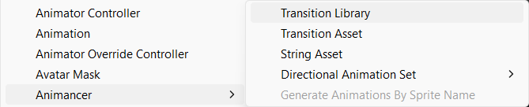
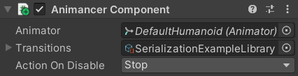
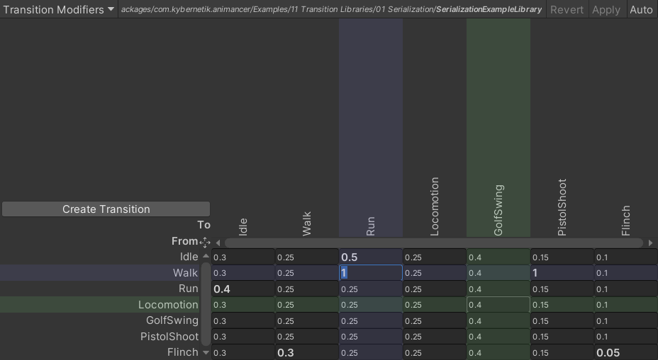
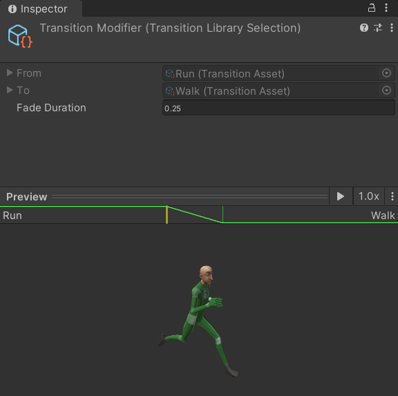
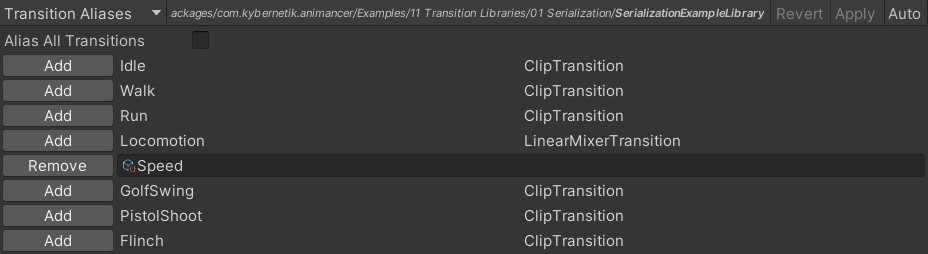
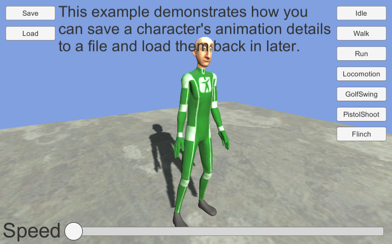

Upgrade Guide
See the Animancer v7.0 Upgrade Guide if you're upgrading from a version older than that, then follow the new Upgrade Guide for this version.
For the first time ever, Animancer v8.0 is a paid upgrade.
Purchases after 2024-05-01 can upgrade for free.
Older purchasers will receive a 50% discount.
Major Features
- The minimum supported Unity version is now 2022.3.
- Transition Libraries allow transitions to be altered based on the previous state.
- The experimental Weighted Mask Layers system has been turned into a proper feature.
- Animancer Events have been reworked in several different ways.
- Mixer and Controller State parameters can now be bound by name in a central dictionary.
- Cross fading is now managed by Fade Groups, which also include the old Custom Fade system.
- The Live Inspector has been improved.
- The Polymorphic Drawer system can now show when multiple fields share the same reference.
- Several of the Animancer Tools have been improved.
- A viable workaround has been found for a significant issue with Unity's Animation Rigging package.
Transition Libraries
Transition Libraries are a new feature which allows you to look up transitions by name and modify what specific transitions look like depending on the character's previous state. Unlike Animator Controllers, libraries don't contain any logic for managing what a character can do, you still tell Animancer to play something and it will still play, but a library might modify the transition's fade duration. Libraries are also fully open and modifiable at runtime.
There are 3 main library classes:
| Class | Purpose |
|---|---|
TransitionLibraryDefinition |
The serializable form of a library which is used to create a TransitionLibrary at runtime. |
TransitionLibrary |
The runtime form of a library which is optimised for efficiently looking up transitions. |
TransitionLibraryAsset |
A ScriptableObject which stores a TransitionLibraryDefinition and creates a TransitionLibrary from it. |
- You can create a
TransitionLibraryAssetvia Assets/Create/Animancer/Transition Library:

AnimancerComponents have a newTransitionsfield to put it in so anything you try to play will check the library for modifications:

- Double clicking a
TransitionLibraryAssetopens a window to edit it:

- The window keeps its own copy of the library asset being edited. The buttons in the top right allow you to
Revertyour changes,Applyyour changes to the target asset, orAutomatically apply any changes as soon as you make them. - The main view is a table of transitions where each cell contains the fade duration of a particular combination (from row to column).
- Cells with fade duration modifiers are shown in Bold. Otherwise, the fade duration for that combination will default to whatever is specified in the Transition Asset as if you had played it without the library.
- You can drag and drop any Transition Asset into the window to add it to the library or use the
Create Transitionbutton to make a new one. - You can drag transitions in the window to rearrange them.
- Selecting a cell highlights its row and column in blue and hovering over a cell highlights them in green.
- Selecting a cell also shows its details in the Inspector with an interactive preview of that particular transition combination:

- In the top left of the window is a dropdown menu to select a different page to view.
- Currently, the only other page is
Transition Aliaseswhere you can specify additional names which can be used to look up transitions.

- The Serialization Sample demonstrates an additional feature of libraries:
- Having all your animations registered in a centralised location means they can each be represented by an
intindex which can be easily serialized. - The sample uses that to save the character's current animation details to a file and load them back later.
- But the real use case for this would be for networking, which Animancer's flexible decentralised structure otherwise makes difficult.
- Having all your animations registered in a centralised location means they can each be represented by an

Weighted Mask Layers
The experimental Weighted Mask Layers system has been turned into a proper feature. It allows layers to be masked so they control some bones but not others just like the standard AvatarMask system, but with more detail because you can control the Weight of each individual bone instead of only turning them on or off. It also supports fading between different sets of Weights over time.
- Add a
WeightedMaskLayersComponent:
- Click its
Editbutton to open a window where you can configure it.
- Use the
?column to select the objects you want to include in the mask. - Use the
Add Groupbutton down the bottom to add as many groups as you want. - For each object and group, enter the
Weightyou want the object to have when that group is active.
- 1 is the same as including the object in an
AvatarMask, i.e. Layer 1 will fully control the object. - 0 is the same as excluding the object from an
AvatarMask, i.e. Layer 0 will fully control the object. - Values in between will interpolate between both layers.
- In code if you want to change the current
Weightgroup you can get a reference to theWeightedMaskLayerscomponent and callSetWeights(groupIndex)orFadeWeights(groupIndex, fadeDuration).
Known Limitations:
- It only supports 2 layers (Base + 1).
- It only supports override blending (not additive).
- These limitations could be removed with further development if enough users request it.
String References and Assets
strings are often a very convenient type which can make systems easy to use, but also have notable downsides such as being inefficient to compare and hard to refactor.
- The Event Names system used to be based on
strings and the new Event Binding and Parameter Binding systems would have been as well, so a new system has been implemented to avoid those downsides. StringReferenceis a simple class which contains astringand is kept in a dictionary so that everything which callsStringReference.Getfor a givenstringwill be given the exact same reference.- This allows the system to check if two references are equal much faster by using a single equality instruction instead of potentially needing to check if every individual character is equal in two
strings. StringReferencehas an implicit conversion fromstring, meaning that any method which takes aStringReferenceparameter can also be given a regularstring. That's less efficient though, because it needs to look up the reference in the dictionary every time, so it's much more efficient to cache theStringReferenceyourself beforehand, for example:
- This allows the system to check if two references are equal much faster by using a single equality instruction instead of potentially needing to check if every individual character is equal in two
// This is an implicit conversion from string to StringReference:
public static readonly StringReference EventName = "Fire";
// It actually does this internally:
public static readonly StringReference EventName = StringReference.Get("Fire");
// Or you can reference a StringAsset in a serialized field:
[SerializeField] private StringAsset _Name;
StringAssetis aScriptableObjectwhich contains aStringReferenceinitialized from its asset name.- This allows values to be managed more reliably and consistently referenced in multiple places without risking spelling mistakes each time or making it hard to rename things.
StringAssets can be created via Assets/Create/Animancer/String Asset or by using theNewbutton in the Inspector (see below).StringAssetfields normally show up in the Inspector like regularstringfields, but if you move your mouse over them they change to let you pick an asset or use several functions:New- If the field is empty, this button will create a newStringAssetand ask where you want to save it.C- If the field has a reference, this button will copy its name to the clipboard.X- If the field has a reference, this button will remove it.
| Normal Appearance | Mouse Hover |
|---|---|
- You can Drag and Drop
StringAssetreferences from one Inspector field to another if you want to use the same one multiple times. Inspector Gadgets has this as a standard feature for all Object Reference fields.
Animancer Events
Animancer Events have been reworked in several different ways, some of which would result in data loss if you don't run the Serialized Data Migration tool explained in the Upgrade Guide.
Why Rework Event Sharing?
There are two common sources of conflicts that arise when using events:
- Event ownership - when a Transition is shared by multiple characters.
- State ownership - when multiple scripts on the same character try to use the same state without realising.
Animancer Events were originally designed to avoid those issues by being automatically cleared from a state whenever you played something else. That system was good for safety, but bad for efficiency because you had to either spend processing time re-configuring all the events every time you played an animation or spend development time configuring and storing the events separately so they could be assigned to the state every time you played it.
- Transitions solved this by storing their own events which you can configure on startup so they can simply assign the events to the state when played.
- But any transitions shared by multiple character instances (particularly Transition Assets) couldn't be used in that way because all characters would overwrite each other's changes to the same event sequence.
- The
UnSharedtransition system attempted to solve that, but it was confusing to new users and only usable in limited situations so it has now been removed. OptionalWarning.DuplicateEventandOverwriteEventtried to at least detect cases where multiple characters were adding their own copy of the same callback, but even that had limited usefulness so they have been removed.- The old system was also confusing to many new users who did not expect their events to be cleared.
Persistent Owned Events
For the reasons explained above, the new system doesn't automatically clear events whenever anything is played, encourages users to configure their events when a state is first created, and discourages sharing states between scripts.
This was achieved by splitting the AnimancerState.Events property into 4 different members:
bool Events(object owner, out AnimancerEvent.Sequence events)
- The first time this method is called on a state, it will create a clone of whatever event sequence had already been assigned (or just a new sequence if none was assigned yet).
- Then it returns
trueto indicate that the caller should now configure the giveneventsas they see fit. - On subsequent calls the state already owns its events so this method will do nothing and return
false.
- Then it returns
- It also calls
AnimancerState.AssertOwnershipwhich assigns the state'sowneror throws an exception if it already had a different owner.
The recommended usage looks like this:
public static readonly StringReference EventName = "Event Name";
...
AnimancerState state = animancerComponent.Play(animation);
if (state.Events(this, out AnimancerEvent.Sequence events))
{
events.SetCallback(EventName, OnAnimationEvent);
events.OnEnd = OnAnimationEnded;
}
- That also shows how to use the new
StringReferencebased Event Names system.
AnimancerEvent.Sequence Events(object owner)
- This method does exactly the same thing as the one above, except that it returns the event sequence and doesn't indicate whether ownership was only just claimed or not.
- This allows for simpler usage in situations where you only need to set the End Event:
AnimancerState state = animancerComponent.Play(animation);
state.Events(this).OnEnd ??= OnAnimationEnded;
- The
??=means it will only assign the callback if it was previouslynullwhich avoids the performance cost of allocating a new callback every time. - This is why the
ownerparameter to claim state ownership is so important, because without it you could run into a situation where one script assigns its callback then another script tries to use the same state but never ends up assigning its own callback.
OwnedEvents
- This property enforces event ownership like the above methods, but ignores state ownership so it should generally only be used in situations where you have already detected that multiple scripts are sharing the state.
SharedEvents
- This property gives direct access to whatever events have been assigned, meaning it will be
nullby default and doesn't have any of the safety restrictions of the other options.
- These changes avoid the need for the
UnSharedtransition system, so it has been removed because it was confusing to many users and didn't cover many common use-cases. #261 - In order to reduce the chance of multiple scripts sharing the same state, each
ClipTransitionwill now create its own state instead of having them share a state if they have the sameAnimationClip.- This is achieved by having
ClipTransition.Keyreturnthisinstead of theClip. - Same for
PlayableAssetTransition.
- This is achieved by having
- In order to avoid overwriting the state's owned events on subsequent plays, Transitions will now only assign their
Eventswhen they first create a state instead of re-assigning them every time they are played (which was necessary when the events would have been automatically cleared from the state). ExitEvents have also been reworked to be based around keeping the same instance in a field instead of clearing and object pooling instances.- One major difference between Animancer Events and Unity's inbuilt Animation Events is that Animancer Events aren't triggered on a state while it fades out.
- The old system enforced this inherently because starting a fade out would have cleared the state's events.
- The new system has the same behaviour by default, which can be disabled by setting the static
AnimancerState.RaiseEventsDuringFadeOut = true;.
Event Names
Animancer Events can optionally be given names which can then be used to identify them in code. They previously used regular strings which made the system simple to use, but had several downsides such as being inefficient and hard to refactor.
Those strings have been replaced by String References and Assets (StringAssets in the serialized data and StringReferences in the runtime data).
Using the [EventNames] attribute now shows an info icon next to the name field with a tooltip listing all the expected names. If an unexpected name is selected, it will change to a warning icon.
This is one of the changes that would result in data loss if you don't run the Serialized Data Migration tool explained in the Upgrade Guide.
Event Binding
In many cases, being able to set up event timings in the Inspector while previewing the animation and then assign callbacks to those events in code based on their names is a great workflow (and that's not changing). But in some cases that workflow isn't ideal or even viable, such as if you're playing an animation in a Transition Library by name which means you don't even know what's going to be played so you can't be sure what events you need to look for.
The solution to this is the new AnimancerComponent.Events property, which is a dictionary of String Reference names mapped to callbacks. Whenever an event with a name but no callback is triggered, it will look in the dictionary for a callback bound to its name. If an event has no callback in either location, it will still trigger OptionalWarning.UselessEvent to let you know that something is likely configured incorrectly. This is closer to the way Unity's inbuilt Animation Events work, except that it's still using delegates for flexibility instead of requiring a method name to match the event name in a component attached to the same GameObject as the Animator.
For example, here's a simple script that expects its transition to have events with the name "Footstep" set up in the Inspector:
public class FootstepWalkExample : MonoBehaviour
{
public static readonly StringReference FootstepEvent = "Footstep";
[SerializeField] private AnimancerComponent _Animancer;
[SerializeField, EventNames] private ClipTransition _Walk;
protected virtual void OnEnable()
{
_Walk.Events.SetCallbacks(FootstepEvent, PlayFootstepSound);
_Animancer.Play(_Walk);
}
private void PlayFootstepSound() { }
}
Note the [EventNames] attribute. Since it isn't being given any names explicitly, it will look for static fields in the class it's in.
That's a nice simple script which would work perfectly fine on its own, but what if you have other animations in other scripts that also want to have footstep events? Obviously you could connect all of them to a central script which manages the footsteps, but that sort of thing can start turning your code base into a tangled mess of interconnected dependencies. Instead, the new Event Binding system would let you split those responsibilities into two scripts like this:
public class FootstepManager : MonoBehaviour
{
public static readonly StringReference FootstepEvent = "Footstep";
[SerializeField] private AnimancerComponent _Animancer;
protected virtual void OnEnable()
{
_Animancer.Events.Set(FootstepEvent, PlayFootstepSound);
}
private void PlayFootstepSound() { }
}
public class WalkExample : MonoBehaviour
{
[SerializeField] private AnimancerComponent _Animancer;
[SerializeField] private ClipTransition _Walk;
protected virtual void OnEnable()
{
_Animancer.Play(_Walk);
}
}
The FootstepManager script registers its PlayFootstepSound method to be called by any event with the name "Footstep" in any animation and the WalkExample script doesn't need to know anything about footsteps, it's simply responsible for playing its animation and managing the mechanics of walking. It took a bit more code, but the system is now more flexible and modular so it should be easier to extend and maintain as your systems grow in complexity.
The event binding dictionary is shown in the Live Inspector (unless you leave it empty):
Event Callbacks
On its own, the new Event Binding system would have had one major drawback compared to Unity's inbuilt Animation Events: the inability to specify parameters in the Inspector. In the above example, the "Footstep" events have no way to indicate which foot they're referring to. You could give each foot a different event name, but that's not very convenient and still doesn't allow other parameter types like floats or asset references.
Instead of solving that issue by adding extra fields for several specific parameter types (like Animation Events do), it has been addressed by changing the serialized event callback field from a hard coded UnityEvent to a [SerializeReference] field which can hold anything that implements IInvokable (a simple interface with an Invoke() method).
- Animancer includes its own
UnityEventclass which simply inherits from Unity's regular one and implementsIInvokableso it can be used for event callbacks exactly the same as before.- Since regular serialized fields store their data differently to
[SerializeReference]fields, this is one of the changes that would result in data loss if you don't run the Serialized Data Migration tool explained in the Upgrade Guide. - It also supports UltEvents in the same way, which is much better than the old system where you could only use
UnityEvents orUltEvents and swapping between them would lose all your event data.
- Since regular serialized fields store their data differently to
- The parameter issue is handled by
AnimancerEvent.Parameter<T>which is anIInvokablethat sets the staticAnimancerEvent.CurrentParameterproperty then invokes the bound callback.- Any method can access the
AnimancerEvent.CurrentParameterduring an event (it's cleared afterwards). - There are also several methods in the Event Binding dictionary for binding callbacks with a parameter which can be used like this:
- Any method can access the
public static readonly StringReference FootstepEvent = "Footstep";
[SerializeField] private AnimancerComponent _Animancer;
protected virtual void OnEnable()
{
_Animancer.Events.AddNew<AudioSource>(FootstepEvent, PlaySound);
}
public void PlaySound(AudioSource audioSource) { }
- That method would be automatically given its value from the event's callback parameter set in the Inspector (or an error if it doesn't have a parameter).
- Animancer includes several common parameter types:
bool,double,float,int,long,Object,string. - You can easily add a new parameter type by creating a serializable class like this:
[Serializable] public class ParameterThing : Parameter<Thing> { }
// Inherit from ParameterBoxed<T> instead if Thing is a struct or enum.
- Simply having that class in your project would make it selectable as a callback type.
- You could also create a classs that implements
IInvokableto direcly use it as the callback.
End Event Time
- Animancer Lite now allows you to change the time of End Events. Most of the new features are Pro-Only so this restriction has been removed.
Parameters
Like with the Event Binding system, being able to directly control the parameters of a Mixer State or Controller State is often great, but can be really inconvenient if you don't have a strongly typed reference to the state such as if you're using Transition Libraries or even just Nested Mixers.
The solution is also quite similar: a new AnimancerComponent.Parameters property containing a dictionary of parameter values registered by name which other systems can get, set, and listen for changes to.
Mixer Parameters
- Mixers use the same
StringAssets as the new Event Name system:
- The Inspector shows the
Parametersdictionary below all theStates:
- You can then control the parameters in the dictionary like this (instead of directly on the state):
animancerComponent.Parameters.SetValue(SpeedParameter, value);
- This is a one-way link. Directly changing the Mixer parameters will not affect the Animancer Parameter.
- This is all completely optional. You can still directly set the
mixerState.Parameteras before.
Controller Parameters
Controller States and ControllerTransitions can also have their parameters bound to Animancer's parameters, though it's a bit more complicated than with Mixers.
- When bound, any changes to the Animancer Parameter will update the corresponding parameter in the Animator Controller.
- This is a one-way link. Changes to parameters inside an Animator Controller will not affect Animancer Parameters.
- The simplest usage is to simply enable
Bind All Parametersto have it bind every parameter in the Animator Controller to an Animancer Parameter with the same name and type.
- Otherwise, if you put anything in the
Bindingsarray theBind All Parameterstoggle becomesRebind Names.
| Rebind Names Disabled | Rebind Names Enabled |
|---|---|
| Each name in the array will bind the Animator Controller parameter with that name to an Animancer Parameter with the same name. | The array is split into two columns with the left specifying the name of a parameter in the Animator Controller and the right specifying the Animancer Parameter name you want to bind it to. |
- Note that the
Bindingsarray contains String Assets (not regularstrings).
Linear Mixer Sample
The Linear Mixer Sample previously contained two very similar scripts (LinearBlendTreeLocomotion and LinearMixerLocomotion) to demonstrate the same thing with both a Blend Tree inside an Animator Controller and with a Linear Mixer.
Being able to bind parameters in both types of states to the same Animancer Parameters means that they could now be handled by just one script, though it has still been split into two with separate responsibilities:
PlayTransitionAssetOnEnabledoes exactly what the name says.FloatParameterWrapperis the real point of the sample. It demonstrates how to get and set an Animancer Parameter.
The sample still consists of two scripts, but they're now much more useful because they only have one responsibility each so they could potentially be used in other situations too.
Fade Groups
Previously when transitioning between states, every state would fade independently. You could have one state fading out and another fading in but they weren't explicitly linked to each other. The old CustomFade system had to be built around that by cancelling regular fades and managing them on its own as a group.
Those systems have been unified so all fades are managed as a FadeGroup (even if it only has one thing in it such as when fading out a layer).
- This is slightly more efficient in most cases because it calculates and applies the weights of multiple states in one go instead of independently.
- It also makes it easier to do things like check what animation is fading out, though that isn't a particularly common use case.
- The
FadeGroup.Easingproperty allows you to apply a custom curve to the fade progression like the oldCustomFadesystem.
state = animancerClone.Play(animation, 0.25f);
state.FadeGroup.SetEasing(Easing.Function.SineInOut);
SetEasingis an extension method which will do nothing if theFadeGroupisnull(such as if theanimationwas already faded in so it didn't start another fade) and it also accepts theEasing.Functionenum as a parameter instead of only aFunc<float, float>delegate.- Active
FadeGroups are shown in the Inspector if you have theShow Internal DetailsDisplay Option enabled.
Live Inspector
The AnimancerComponent Inspector in Play Mode has been given quite a few improvements to its visuals and rendering performance.
| Old Inspector | New Inspector |
|---|---|
- The Live Inspector has been moved out of the
AnimancerComponent's Inspector panel to an interactive preview at the bottom of the Inspector which can be resized, hidden, or even popped out to a separate window.

- The header object field of each state is now just a flat box instead of an actual object field to reduce the unnecessary visual noise.
- While a state is fading, its time bar shows a diagonal line indicating where its
Weightwill go over time. - Changed the
Weightlabels and time lines to be coloured based on their effective weight instead of just the raw weight, meaning that a - Mixers no longer show their children unless the mixer's details are expanded. - Added the ability to Alt + Click a state to expand/collapse all of its siblings as well.
- Added event time indicators to states in the Inspector for Animancer Events and Animation Events.
- Added a Display Option to disable this feature.
- Added the ability to ping states in the Inspector by clicking on fields that reference them.
- Changed states to not show their
Keyin the header unless the sameMainObjectis used by multiple states. - Added a hover highlight to the animation binding warning icon so it looks more like a button.
- Changed Mixers to ignore the "Auto Normalize Weights" Display Option since they're usually used for things that don't require the weights to add up to 1.
- Added a "Repaint Every Frame" toggle to the
AnimancerComponentInspector when there are 10 or more Components on theGameObjectbecause Unity won't do it by default to save performance. - Added null reference detection to the Animation Type warning system to identify animations with missing
Sprites. - Improved the
Add Animationfield which is now used in the Live Inspector sample.
Transition Inspector
Many new users have trouble figuring out how to get animations to restart when you play them instead of continuing from their current time (despite the topic being covered many times in the documentation and code comments and tooltips). So the Inspector for Transitions has been changed to make it clearer. When the Speed or Start Time toggle is disabled, the regular fields will be replaced with a text box saying that it will continue at the current value which should hopefully make it obvious that you can tell it not to do that using the toggle.
Shared References
The Polymorphic Drawer system now lets you properly view and manage references that are shared by multiple fields.
For example, say you have 3 [SerializeReference] ClipTransition fields A, B, and C:
If A already has a value and you go to create an object for B, the menu will have a Shared Reference sub-menu where you can give it the same reference as A:
While A and B are referencing the same object, they will show a link toggle:
- It has a randomly generated colour for the object so if other fields have shared references to other objects they will hopefully have a different colour.
- It has a tooltip listing all the fields sharing that object.
- Clicking it will show connection lines between the fields sharing that object.
Tools
Several of the Animancer Tools have been improved:
- Pack Textures:
- Fixed compile errors if Unity's Built-in Image Conversion module isn't present. Now the tool will simply display an error message.
- Rename Sprites:
- Merged the Sprites and Names into a single column.
- Added thumbnails so you can see what you're working with.
- Added a
First Indexfield so you can choose to start numbering at 0 or 1 or whatever number you want. #316 - Removed the
New Namesfield. - Instead, anything you enter in a
Sprite's name field will apply to it and all following Sprites until the next name you enter. For example:
| Walk Down | Walk Down and Left |
|---|---|
|
First you type The Because there are more than 10 |
Then you go to the 5th Now everything after it is using that name while the first 4 continue using The two names you've entered are shown in bold while the others which are following your naming convention are in italics. |
- Generate Sprite Animations:
- Added fields to customize the animation being generated (if you want to animate something other than a
SpriteRenderer): #283Hierarchy Path: the name of each object in the Hierarchy below theAnimatordown to the object with the component you want to animate.Target Type: the Assembly Qualified Name of the Component type on that object.Property Name: the name of the field on that Component.
- Added thumbnails and animation previews.
- Added fields to customize the animation being generated (if you want to animate something other than a
Animation Rigging
Unity's Animation Rigging package has always worked with Animancer but has several limitations which are explained on that page.
The Resetting Properties issue now has a new workaround which is much more usable than the previous workarounds. The PlayableOutputRefresher page explains how to use it.
Samples
The Samples are currently being worked on as explained in the Release Timeline
Now that Animancer has become a package, the Examples have been re-branded as Samples and reorganised to follow Unity's guidelines for package samples. That means they are hidden by default and can be imported into your project as explained on the Samples page.

General Changes
- Replaced the old DefaultHumanoid character model with AnimancerHumanoid.
- Created with VRoid Studio.
- Removed the old SpiderBot model as well.
- Changed the coding conventions for sample scripts:
- Classes are no longer
sealed. MonoBehaviourmessages areprotected virtualinstead ofprivateto encourage good practices in users as explained here.- Scripts use explicit variable types.
- Classes are no longer
- Added a
SampleReadMeto every sample scene to give new users a bit more guidance in case they're just casually looking through the samples and lead them towards the documentation.
Additions
- Added Live Inspector.
- Added Library Character and Animation Serialization to demonstrate Transition Libraries.
- Added Facial Expressions.
- Added Directional Character 3D. #280
Removals
- Removed
Root Motionbecause the behaviour it demonstrated (togglingAnimator.applyRootMotionwith a class that inherits fromClipTransition) was rather clunky and not particularly useful.- Added a Root Motion page to the User Manual with a more general explanation.
- Removed
RootMotionRedirectfrom Brains since the Redirect Root Motion scripts are now outside the samples.
- Merged
Speed and TimeandSolo Animationinto Doors which now usesSoloAnimationinstead ofAnimancerComponents. - Merged
Hybrid Basicsinto Hybrid Character and changed it to be a remake of Basic Character to show the simplest possible usage of Animator Controllers. - Moved Event Utilities out to the User Manual since there's no real point in listing it as a Sample when it doesn't have a scene.
Specific Changes
- Reworked
Named Animationsinto Named Character which uses a Transition Library instead of aNamedAnimancerComponent. - Reworked Linear Mixer to use the new Parameter Binding system as explained above.
- Reworked Directional Mixer:
- It now uses the AnimancerHumanoid model instead of Spider Bot.
- It also uses the Parameter Binding system.
- The samples now include Humanoid-Walk animations for Backwards, Left, and Right for this purpose (in addition to Forwards).
- It now uses Root Motion to move around.
- Removed physics so it simply moves the
Transformaround without aRigidbodyorCollider. - It no longer bothers with rotating the character since it was off topic.
- Reworked Footstep Events to use the new Event Binding system as explained above.
- Reworked
Leaninto Hit Impacts which uses the same job to lean the character for a short time as if they're being hit by an attack - Improved 3D Game Kit's Full Movement Control system to interpolate towards natural Root Motion as the player's input magnitude approaches zero.
Minor Features
- Added
AnimancerLayer.ActiveStatesto efficiently track states that are playing or have anyWeightorTargetWeight.- Changed
AnimancerState.IsActiveto include the currentWeightso it corresponds to the state's presence in theActiveStateslist. - Added
AnimancerState.IsCurrentwith the old behaviour ofIsActive(justIsPlayingandTargetWeight > 0). - Optimized various operations which previously iterated through all states in a layer to now only go through the active states. For example, playing a new animation only needs to stop or fade out the other animations which were actually playing instead of wasting time stopping states which were alreay stopped.
- Changed
- Added a reflection based system for associating
CustomGUIdrawers with their target objects.- Added support for custom
CustomGUIon internal details (visible in theAnimancerComponentInspector when the "Show Internal Details" display setting is on). - Added
FadeGroup.Drawer. - Added
EventDispatcherDrawerfor drawing event dispatchers in the Post-Updatables list.
- Added support for custom
- Added
AnimancerEvent.Sequence.SetCallbacks,AddCallbacks, andRemoveCallbacksfor controlling all events with the given name instead of only the first one. #263 - Added
AnimancerEvent.Dispatcher.MaximumFullLoopCountto prevent a short and fast looping animation from invoking all its events too many times every frame. It's still unlikely that you'll get useful behaviour from invoking so many events, but this should help limit how badly it can lock up the app at least. - Added
MixerState.NormalizedParameterfor treating the parameter as a value between 0 and 1 regardless of the actual thresholds assigned. - Added
IParametizedStateto simplify parameter drawing in the Inspector for Mixers andControllerStates. - Added
AnimancerGraph.DestroyPlayablein case you want to destroy it without destroying the whole graph (in case the graph was owned by another system). - Added
[AnimancerHelpUrl]attribute which uses a type reference to generate the URL instead of needing to hard code the string. - Added
ClipTransitionSequence.TryGetCumulativeTime. - Added
oldValueas a parameter toIPolymorphicReset.Resetso it can potentially copy over things based on specifically known previous types. - Added
Normalized Start Timefield toSoloAnimation. - Added
OptionalWarning.EventPlayMismatchto help detect event registration issues with shared Transitions. - Added
OptionalWarning.DynamicAnimationwhich warns if you try to play an animation that isn't saved as an asset because animations can't be created dynamically at runtime (except Legacy animations which Animancer can't use). - Added
OptionalWarning.ExpectFadewhich warns if a state created by a transition with a fade is then played without a fade. This usually happens for beginners who don't realise thatPlay(state)won't have any fade and they should usePlay(transition). - Added
CloneContextsystem for cloning complex object trees and translating their internal references to the corresponding clones. - Added
TimeSynchronizerto replace the oldTimeSynchronizationGroup. #250 - Added Project Settings page for
AnimancerSettings. - Added
Initialize Graphcontext menu function toAnimancerComponent. - Added
Orphanslist to the Live Inspector which shows states that have been registered with a key but not given a parent. - Added
DragAndDropHandlerdelegate to rework drag and drop handling in the editor GUI.
Improvements
- Improved Polymorphic Drawer to be able to properly draw objects with custom drawers for their type.
- Improved Object Pool logging to log the contents of all pools when the Play Mode state changes.
- Improved
ManualMixerState.ToStringto put the mixer type first and be cached separately from theDebugNameso it doesn't appear as a string label in the Inspector. - Improved
SimpleTimer:- Changed it to track
longticks instead ofdoubleseconds. - Added an optional
formatstring in case more or less than 3 decimal places of precision is needed. Can also set it tonullfor it to use the ticks in its strings instead of seconds.
- Changed it to track
- Improved the animation bindings warning icons:
- Optimized their drawing to be more efficient.
- Removed the loading icons while the bindings are being checked since they will usually not need to show a warning anyway.
- Removed the
ITransitioninterfaces nested inside each state type because they're no longer necessary.
- Improved the
AppendDescriptionmethods:- Added
IHasDescriptionwith standard extension methods. - Added
IUpdatableandIDisposabledescriptions to the text if they implementIHasDescription. This is used byFadeGroups. - Added
AnimancerUtilities.AppendFieldfor easily appending a named value. - Pulled
AnimancerState.GetPathup toAnimancerNode. - Changed various inter-node references to use
GetPathto make it easier to tell what it's referring to. - Improved
AnimancerGraph.AppendDescriptionto include Orphan States, i.e. states registered in the dictionary but with no parent.
- Added
- Improved various icon usages. In particular, replaced all "x" buttons with an eraser icon.
- Optimized
ClipState.LengthandIsLoopingto be retrieved from theAnimationClipin the constructor and cached because getting them from theAnimationClipallocaes some garbage every time. - Optimized Animancer Events by adding
AnimancerState.GetEventDispatchInfoto get all the required details from the state in one call, which is much more efficient (especially for Mixers). - Optimized Mixers to cache their
IsLoopingproperty instead of checking if any child is looping every frame (which would have been recursive for nested Mixers). - Optimized the
AnimancerState.NormalizedTimeDgetter to only get theLengthonce. - Optimized
Object.nameusage by addingObjectNameCachesince it allocates garbage every time it's accessed.- You can define
ANIMANCER_DISABLE_NAME_CACHEas a compilation symbol to disable this system.
- You can define
Changes
- Changed the "total Weight of all states in this layer does not equal 1" Inspector warning to appear on all layers instead of only the Base Layer. If you want to smoothly stop a layer you need to fade out the layer itself, not its states.
- Changed all states to stay at
Time = 0after their first frame so that the first time they're played is consistent with subsequent re-plays. - Changed
InputBufferto replace the state machine'sForceSetDefaultStatedelegate to try to enter the buffered state first.- Changed the Weapons example's
AttackStateto use this feature for attack combos so it doesn't need to return to Idle for one frame between attacks.
- Changed the Weapons example's
- Changed
AnimancerLayers to use a list-likeCapacitywhich doubles whenever it needs to increase instead of simply incrementing. - Changed the
AnimancerLayer.MaxCloneCountsetter topublic. - Changed
ITransition<T>to support covariance. - Changed
ManagedReferencehandling to use themanagedReferenceValueproperty. - Changed
AnimancerEvent.Sequence.CopyFromto not resize theNamesarray if it's already larger than necessary. - Changed
AnimancerSettingsto use dynamic[SerializeReference]fields so it's more modular. - Changed
ICloneableto be generic. - Changed
ControllerState.ActionsOnStopto not callGatherDefaultStatesso it only gets called byCreatePlayable. - Changed
AnimancerTransition.Eventstovirtual. - Changed
AnimancerGraph.KeepChildrenConnectedto always default tofalseinstead oftruefor Generic Rigs because it no longer seems to give them better performance. - Changed
OptionalWarning.UnusedNodeto not log for nodes with a parent. - Changed
AnimancerNode.CopyFromand all inherited overloads topublic. - Renamed
ValidateAssertNotLegacytoAssertAnimationClipand added anullcheck to give a better exception. - Moved the default
AnimancerSettingslocation to the root Assets folder and added an Inspector message explaining that you can move it anywhere but should keep it outside the Animancer folder so you keep your settings if you ever delete and update Animancer. - Moved the
Speedfield from child transition classes up to the baseAnimancerTransitionsince all states now support it (ControllerStatedidn't previously).- Removed
OptionalWarning.UnsupportedSpeedfor the same reason.
- Removed
- Simplified the
AnimancerStateparenting system.AnimancerState.SetParentno longer takes a manually specified index. Both Layers and Mixers will add new states to the end of their list.- Removed
AnimancerNode.AddChildsince it's now unnecessary. Just usechild.SetParent.
- Split
AnimancerReflectionout ofAnimancerUtilitiesandAnimancerEditorUtilities. - Split
AnimancerLayerMixerListout ofAnimancerLayerList.
Removals
- Removed the classes derived from
AnimancerTransitionAssetBasefor each individual transition type exceptTransitionAssetsince its[SerializeReference]can hold any of them without changing the asset type.- See the Upgrade Guide for more details.
- Removed
FastEnumeratormembers which modified the list because they exposed unexpected vulnerabilities since enumerators aren't expected to allow modifications. - Removed the Inspector warning "A state is playing at weight 0" because that's actually supported now.
- Removed
AnimancerState.DelayedPauseand integrated its functionality intoControllerStatedirectly since that's the only place it was used. - Removed
AnimancerGUI.GetNarrowTextsince it wasn't really useful and added unnecessary complexity. - Removed
FastComparerandFastEqualityCompererbecause they weren't notably faster and were sometimes slower. - Removed
OptionalWarning.LockedEventssince you would need to explicitly accessstate.SharedEventsto run into the issues it warns about. - Removed
IValidatableand replaced its usage withAnimancerReflection.TryInvoke. - Removed
LazyStackand replaced its usage with manual list management since there weren't many uses. - Removed
SoloAnimation.FootIKsince it's unlikely to be useful for character animations anyway.
Fixes
- Fixed the
ReadMeto only log that a new version is available once per Unity Editor session instead of logging again every domain reload. - Fixed fading to include the root
AnimancerGraph.Speedin the fade time progression. - Fixed
AnimancerEditorUtilities.PlayModeStateto be properly initialized in Edit Mode. - Fixed
AnimancerStateDictionary.GetEquivalentNodeto connect a newly cloned state to the correct layer. - Fixed incorrect comment on
AnimancerState.MoveTimeand added more detail. It previously claimed that Animancer Events would be skipped, but that isn't true. - Fixed several incorrect usages of the component
nameinHybridAnimancerComponent. #297 - Fixed Animancer Events to not start triggering every frame if you used one to re-play the animation that triggered it. #298
- Fixed
AnimancerStateDrawerto not break GUI control IDs after it. - Fixed the Live Inspector state foldout to properly clear the hot control when clicked.
- Fixed
TransitionDrawerindentation in Unity 2022. - Fixed
TransitionDrawerto still show its foldout arrow in array fields even if thats the only field in the declaring type. #307 - Fixed
TransitionDrawerto still show its foldout arrow if the target Transition is in a serializable class. - Fixed
TimeScaleto do nothing when disabled. - Fixed
AnimancerLayer.Maskto allownullto be assigned without allocating any garbage in case you want to set it from an unassigned serialized field or copy from another layer which has no mask. #303 - Fixed
AnimancerLayer.GetOrCreateStateto start a cloned state atWeight = 0and register it in the state dictionary. - Fixed
IUpdatableusage to continue enumerating properly if an item is removed during an update before it has been updated. - Fixed
AnimancerNode.MarkAsUsedto be properly Assert-Conditional. - Fixed
SampleInput.WASDto work properly with the Play Mode Domain Reload disabled. - Fixed
AnimancerGraph.InsertOutputPlayableto connect the correct playable. - Fixed
AnimancerState.RecreatePlayableto retain its IK flags and connect thePlayableto the parent if necessary. - Fixed
AnimancerNodeDrawerto allow fades to be manually started in the Inspector. - Fixed the
SpriteDataEditor.SpriteCountsetter to initialize all the sprites instead of leaving themnull. - Fixed the dummy event callback drawer to automatically expand a newly created item.
- Moved the
IPolymorphicimplementation fromITransitiontoAnimancerTransitionso it doesn't interfere with custom Object Field drawers (from Inspector Gadgets or any other system) on Transition Asset references. - Fixed
PolymorphicDrawerto not draw the header line twice if it can't find another drawer for the target object type. - Fixed Mixer child weight calculation errors.
- Fixed Mixer Time Synchronization to calculate the speed properly for nested Mixers.
- Fixed Ctrl + Click on a Mixer child in the Inspector causing it to re-parent under the layer and play directly. Instead it will now just play the Mixer.
- Fixed the Mixer Transition Inspector to not show a toggles on the
Speedfields to disable them. #258 - Fixed
LinearMixerTransitionDrawerto not lose the text field being edited when a sorting warning appears or disappears. #343 - Fixed
PlayableAssetTransitionDrawererror when changing theBindingscount to 0. - Fixed
ControllerState.GetStateInfoto return a default uninitialized state instead of giving an error if called before the Playable is initialized. - Fixed the Inspector for states with 0 length to show the time highlight bar across their whole area.
- Fixed
AnimancerGraph.CopyFromto properly copy custom fades and do nothing if called on itself. - Fixed
AnimancerLayer.CopyStatesFromto reuse existing states instead of destroying and recreating them all. - Fixed
AnimancerStatecloning into a new graph uses the sameKey. - Fixed
AnimancerUtilities.TryGetIsLoopingandTryGetLengthto not cause exceptions if the given object is a destroyedAnimationClip. #342 - Fixed Real Speed field in the Inspector to not cause drag events to be lost when it appears or disappears.
- Fixed
AnimancerGraphCleanupto work properly when the Play Mode Domain Reload is disabled.- Replaced
OptionalWarning.CreateGraphWhileDisabledwith a warning whenAnimancerGraphCleanupis forced to clean up a graph that wasn't destroyed in Play Mode.
- Replaced
- Fixed temporarily disabled
OptionalWarnings to be re-enabled on entering Play Mode. - Fixed scripts to support API changes in Unity 6.
Rigidbody.velocityrenamed tolinearVelocity.
- Fixed
UnityVersionChecker.ExpectedAssemblyTargetused by Animancer Lite to warn if the wrong DLL is being used (meaning the user needs to re-download the correct version of Animancer for their version of Unity). - Fixed
[EventNames(typeof(Something))]to include names in classes thatSomethinginherits from. #353 - Fixed various exceptions caused by having a Transition Assets without its
Transitionassigned. - Fixed
TransitionDrawerto be able to draw object fields for Transition Assets.